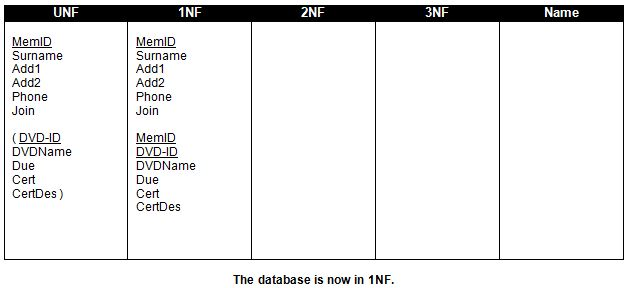

<div id="jsn-maincontent" class="span9 order1  row-fluid">
					<div id="jsn-maincontent_inner">
						<div id="jsn-centercol"><div id="jsn-centercol_inner">
									<div id="jsn-mainbody-content" class=" jsn-hasmainbody">
								<div id="jsn-mainbody-content-inner1"><div id="jsn-mainbody-content-inner2"><div id="jsn-mainbody-content-inner3"><div id="jsn-mainbody-content-inner4" class="row-fluid">
								
										
								
								<div id="jsn-mainbody-content-inner" class="span12 order1 ">
		
										<div id="jsn-mainbody">
										<div id="system-message-container">
	</div>

										<div class="item-page" itemscope itemtype="https://schema.org/Article">
	<meta itemprop="inLanguage" content="en-GB" >
	
		
						
		
	
	
		
								<div itemprop="articleBody">
		<p>&nbsp;</p>
<h1 style="text-align: center;">Step 1 - From UNF to 1NF</h1>
<p><strong>STEP 1 - Put the UNF data into first normal form, otherwise known as 1NF</strong><br>A table is in 1NF if it contains no 'repeating groups'.</p>
<p>So what do you do? You have already identified a 'repeating group' of attributes and the primary key for that repeating group.</p>
<p><strong>1a)</strong> Now, copy over the repeating group into the 1NF column. (You don’t need the brackets any more but keep the primary key underlined.)</p>
<p><strong>1b)</strong> Once you have done this, copy across the attribute that acts as the primary key from the non-repeating group in the UNF column and add it to the repeating group in the 1NF column. Make sure that this attribute is also underlined. The repeating group in 1NF now has a ‘compound’ primary key, a primary key made up of more than one attribute (in this case, the primary key is made up of two attributes but they can be made up of three or even more attributes).</p>
<p><strong>1c)</strong> Finally, copy across the data items that remain in UNF to 1NF, into its own group.</p>
<p>It sounds a lot to do, but it is very mechanical. You do exactly the above and nothing different every time you want to convert a database from UNF to 1NF. If you have done everything correctly, your Analysis Table should now look like this:</p>
 
<p style="text-align: center;"></p>
<p>Some points to note. You now have two groups of attributes, not one. Each group of attributes corresponds to a table of records, so we now have two tables of records. One table holds just the members’ details. The second table holds all the other attributes. The records in each table can at any time be recombined into one record, however, because they are linked using the attribute MemID. Note that the second table in the 1NF column has a compound primary key, not a simple primary key. This means that the key is made up of more than one attribute. If you want to retrieve a particular record from a table with a compound key, you must state all attribute values in the key; in this example you must state both the MemID and the DVD-ID to get any particular record back from that table.</p>
<p>You have now removed all repeating groups from UNF. That means by definition, your table is in 1NF. The next step is to put your database into the 'second normal form', or 2NF.</p>
<p>&nbsp;</p>	</div>

	
							</div>

									</div>
				
							</div>
							
				        							
							
							</div></div></div></div></div>			
							
							
		        				</div></div> 
				</div></div>